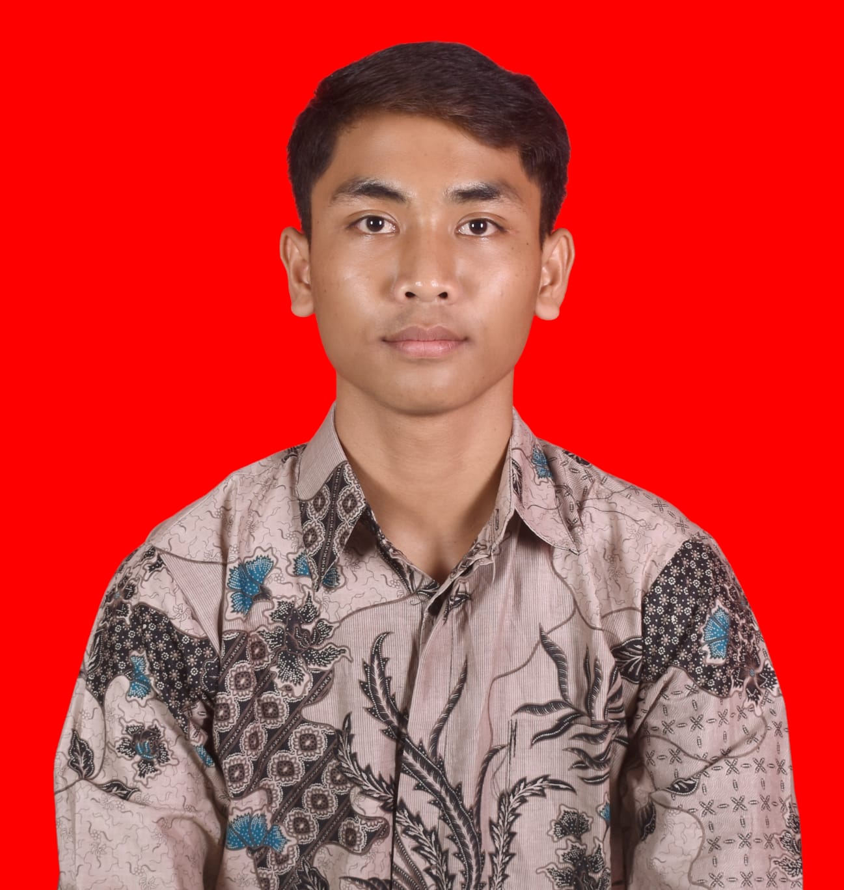
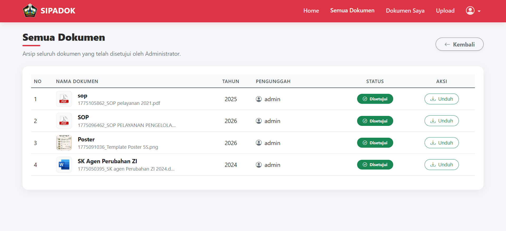
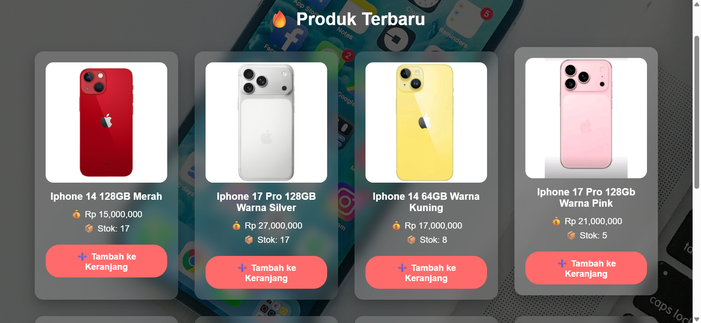
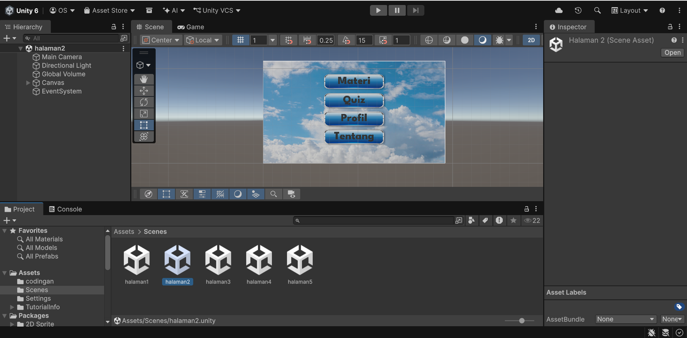
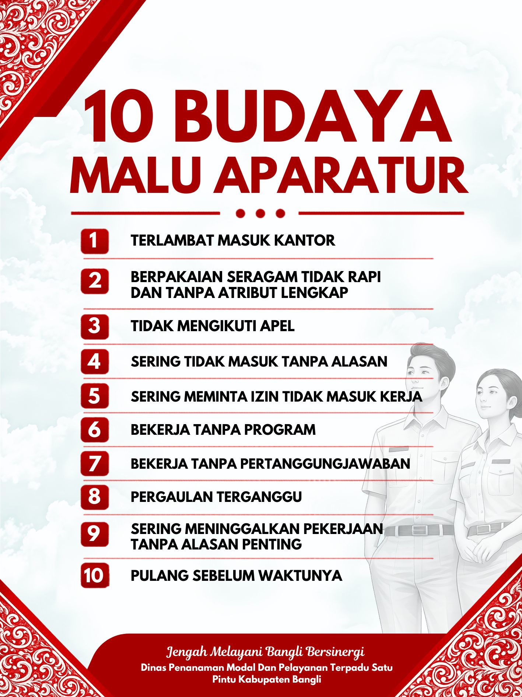
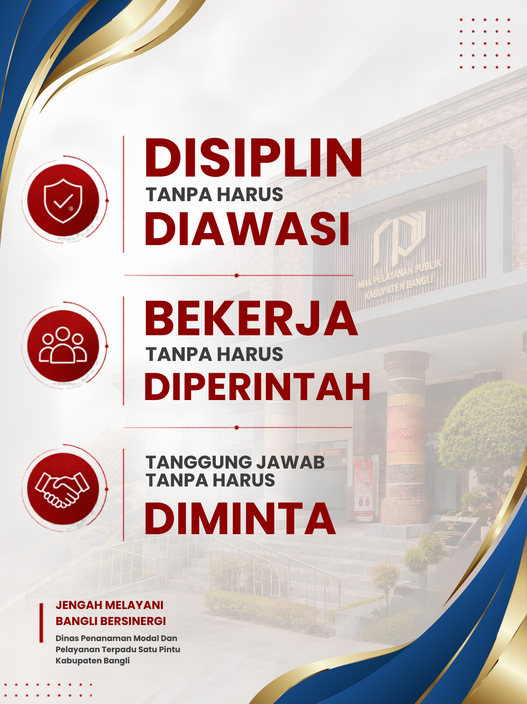
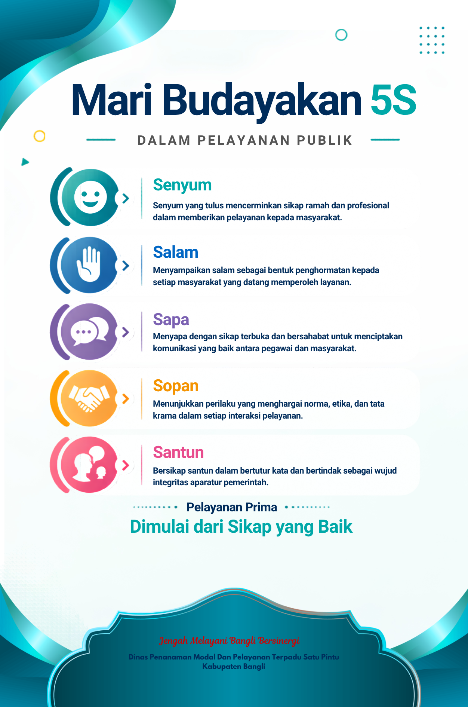

Klik tombol silang (X) atau klik luar gambar untuk kembali
PORTOFOLIO DIGITAL
Halo, saya I Nengah Oka Sastrawan, seorang Junior Graphic Designer & Web Developer sekaligus mahasiswa Program Studi Sistem Informasi di ITB STIKOM Bali. Senang menggabungkan kreativitas modern dengan sentuhan estetika lokal Bali untuk melahirkan karya digital yang bernilai tinggi.

Saya meyakini bahwa pengembangan perangkat lunak dan desain visual adalah dua hal yang saling melengkapi. Disiplin akademis dari program studi Sistem Informasi memberikan saya pemahaman logis struktural, sementara kecintaan pada Desain Grafis memberikan saya kebebasan untuk menuangkan ekspresi estetika.
Sebagai putra daerah Bangli, saya selalu berusaha menyisipkan jiwa kerajinan, ketelitian, dan ornamen tradisional Bali ke dalam setiap fungsionalitas web modern yang saya ciptakan agar bernilai seni tinggi.

Sistem Informasi Pendataan Dokumen Digital yang dirancang khusus untuk mempermudah proses pencatatan, pencarian, dan pengelolaan administrasi di DPMPTSP Kabupaten Bangli secara cepat, rapi, dan terstruktur.

Proyek toko daring interaktif penjualan smartphone dengan katalog modern, sistem keranjang terintegrasi, fitur pencarian responsif, dan panel transaksi yang mudah digunakan.

Perancangan aplikasi simulasi interaktif "Persiapan Alat dan Bahan" yang menggabungkan elemen audio-visual, kontrol tombol dinamis, serta navigasi user-friendly untuk presentasi edukasi.

Kampanye peningkatan kesadaran disiplin dan etos kerja pelayan publik.
Himbauan edukasi tolak suap di lingkungan pelayanan publik Bangli.

Desain media aduan resmi masyarakat Bangli yang tepercaya.

Budaya Senyum, Salam, Sapa, Sopan, Santun untuk mewujudkan pelayanan prima.
Surat Elektronik
okasastrawan@email.com
Telepon & WhatsApp
+62 822-2162-6242
Lokasi Kantor / Domisili
Bangli, Bali, Indonesia
Suksma! Surat Anda berhasil dikirim ke server mock.